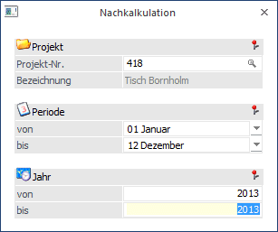
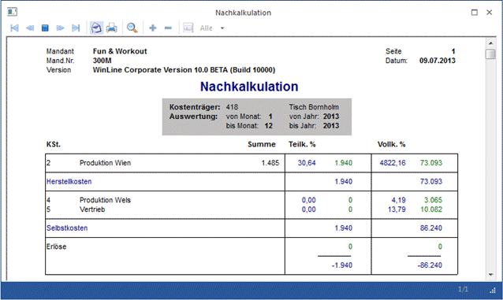

Im Menüpunkt
1 Auswertungen
1 Nachkalkulation
rufen Sie den Ausdruck des auf den erfassten Ist-Kosten basierenden Kalkulationsschemas ab.
Aufgrund der ausgewählten Periode/Jahr werden die entsprechenden Zuschlagssätze für die Berechnung der Kalkulation im Zuge der Auswertung errechnet (Sie können die Prozentsätze jederzeit im BAB nachvollziehen).

Selektionskriterien
Ø Projekt
Eingabe der Kostenträgernummer. Es wird geprüft, ob der Benutzer die Berechtigung hat (WinLine KORE/Stammdaten/Kostenträger), den eingegebenen Kostenträger zu verwenden.
Nach Bestätigung des Kostenträgers wird in der nachfolgenden Zeile die Bezeichnung des Kostenträgers angezeigt.
Ø Periode von - bis
Geben Sie die Periode ein, für die die Nachkalkulation erfolgen soll.
Ø Jahr von - bis
Geben Sie das Jahr ein, für das die Nachkalkulation erfolgen soll (bei abweichenden Wirtschaftsjahr).
Buttons

Ø Ende
Das Fenster wird geschlossen.
Ø Ausgabe Bildschirm/Ausgabe Drucker
Die Auswertung kann entweder über den Drucker oder den Bildschirm erfolgen.

ü Pro Kostenträger werden unter der Summe die Einzelkosten (gebuchten Kosten) bezogen auf Material und Löhne ausgewiesen.
ü Unter Teilkosten % (Herstellkosten) werden die Einzelkosten samt Gemeinkosten auf Basis Zuschlagssätze laut BAB zu Teilkosten ausgewiesen. Unter Teilkosten versteht man die Summe der variablen Kosten, d.h. ohne Einbeziehung von fixen Kosten.
ü Unter Vollkosten % werden die Einzelkosten samt Gemeinkosten auf Basis Zuschlagssätze laut BAB zu Vollkosten ausgewiesen. Unter Vollkosten versteht man die Summe der variablen und der fixen Kosten.